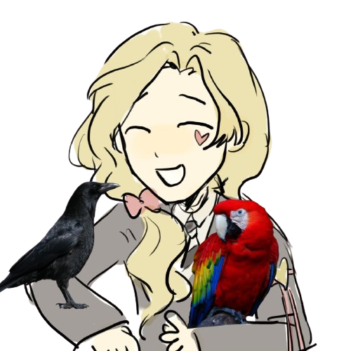
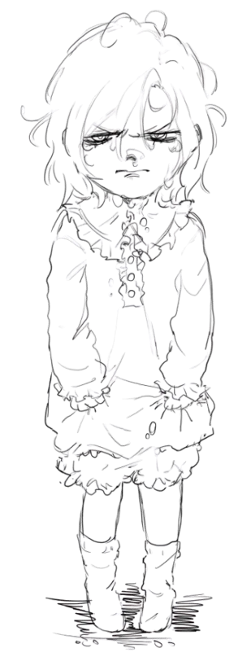
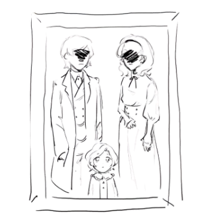

"

Jacques isn't generally seen as the most pleasant person in the room because of his lack
of will to socialize and engage in situations, along with his selective mutism.
He's prone to adhere to a passive, marginal role in situations, however he's shown to
enjoy quietly causing trouble and mishaps for his own personal amusement.
He lives by strictly self-imposed routines, where a change of pace brings extreme
discomfort and unease.
This specific mental scheme applies to all things, making him
almost completely adverse to change in his
life; inability accepting friendships to either
end or start, making him socially wary and distant. He rarely shows interest
in creating
new bonds — unless particularly piqued by interest or admiration — and mostly keeps
relationships with his peers on a non-confidential level.
Rigidly following his routines for
years, he had quite an issue, in the beginning, digesting the Rules of The Queen of Hearts.
With much effort he managed to adapt and squeeze in his schedule within the dorm's,
eventually accustoming himself with it.
Jacques reportedly struggles to focus or find the will
to study specific subjects that
don't spark his curiosity, often resorting to asking his
housewarden, Riddle, for tutoring.
He's stated to take average grades, never receiving
any outstanding results nor ever applying himself to the best of his abilities.
Although presenting a rather dull and unapproachable facade, Jacques is shown to be
easily embarrassed and flustered when called out,
revealing a more shy and socially
anxious side to him, still he appears to be able to stand his own ground and act hostile
when annoyed.
Jacques is shown talking comfortably with people he is especially close
with — such as Yago, Koan, and occasionally Riddle — although
being selectively mute,
as he's shown to deeply value and care for his friends, going as far as spending enormous
sums of money on them to show his affection.
Outdoors, even by his friends' side,
he has a tendency to rely on them for conversation.


Jacques was born into a remarkably wealthy family in Sunshine Lands. His parents
are work-focused businesspeople
whose decision was to entrust their son's care to their Household's staff
workers, as Jacques states, his
parents only conceived him to keep the bloodline going.
For that reason he grew up surrounded by maids and
butchers in a different mansion than where his parents
lived, with barely any contact between himself and them.
He once underlined how he's probably spent more
time glaring bitterly at the singular family picture on
their wall rather than in direct contact with his parents.
Jacques also assumed a defiant, grumpy and bad-tempered
attitude against his caretakers as a result
of feeling neglected by his parents, which led to his mutism at a young age.
He established that
if his parents didn't want anything to do with him then he didn't want anything to do with the world
either. He seemed to develop with difficulties looking over himself, forgetting to eat, drink,
and involuntarily disregarding
his physiological needs, which led to him being hospitalized
a couple of times. Once the doctors noted him to risk serious
health declines, his parents directed
the household staff to become rigid with time schedules to look over their child, which
moulded
Jacques' entire perception of life: he needs to rely on rules and timetables in order to survive.
This influenced him
to an extent so much so that he's still strictly abiding by schedules in day-to-day
life today, with calculations down to the
second. Jacques was used to withdrawing from social interactions
to the point of being unable to ask teachers to go to the bathroom,
much less speaking to his peers. One day,
two kids, Koan and Yago purposefully threw a ball at him, masking it as an accident,
hitting Jacques on the
head and making him cry. Because the two didn't want to get in trouble with the teachers, they quickly
ran
to Jacques, supposedly stole some of his belongings when distracted, and comforted him by playing together.
From that day
onwards, they became best friends till present day, with Jacques frequently inviting the two over
at his house to play together,
and treating them to expensive activities. At 16 years old they got into NRC together,
although sorted into different dorms. Jacques
schedules his days in order to meet up with both of them at least once every day.